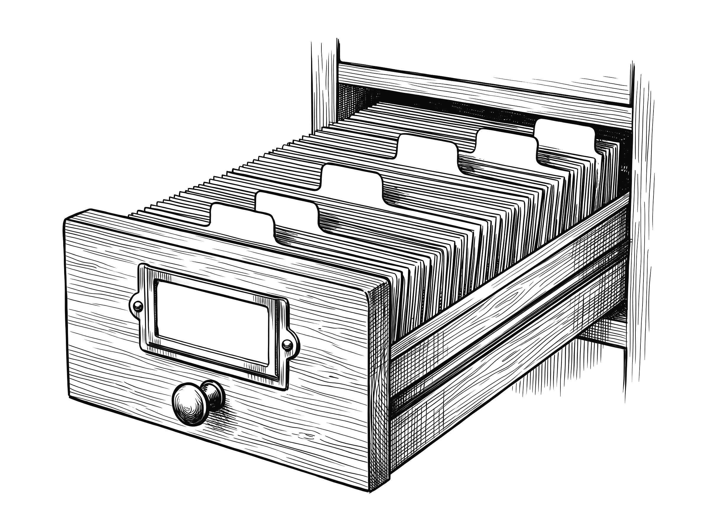

Открыт к предложениям: директор по маркетингу · коммерческий директор · руководитель e-commerce и маркетплейсов

Максим Пугачев
Директор по маркетингуe-commerce и маркетплейсы
Руководил командой более 90 человек, 35 в прямом подчинении — 3,5 года полностью удалённо
Удалённо или в офисе на полный день · готов к переезду
18 лет в продажах и маркетинге, 13 из них руководителем · маркетинговые бюджеты до 200 млн ₽ в год
- 25–30 → 8–17 %
- ДРР платных каналов сайта: снизил, когда забрал рекламу в штат; бюджет на 30 % меньше при тех же заказах
- 15–20 → 30–35 %
- повторные покупки на сайте; доля CRM-рассылок (email, push, SMS) в выручке сайта 8 → 15 %
- ×2,9
- рост выручки своих брендов (СТМ) на всех площадках за 2025 год. Валовая маржа этих брендов на площадках — с 43 % в 2023-м до 61 % в 2025-м
- ≈ 0 → 40–50 %
- доля маркетплейсов в обороте компании. Отдел маркетплейсов собрал я
Написать в Telegramили на почту maksim.pugachev69@gmail.com · LinkedIn
Владелец каждую неделю получал одну сводку: продажи, рынок и задачи всех отделов. Собирал её ИИ, решения готовил я.
Закрыты только обороты с поставщиком.
было · стало



Реклама на 30 % дешевле при тех же заказах, повторных покупок почти вдвое больше
Когда я пришёл, сайт не менялся 10 лет. На маркетплейсах почти не продавали.
было · стало
Реклама
Забрал рекламу, SEO и соцсети в штат: своя команда видит остатки и прибыль, подрядчик — одни клики. Деньги вкладывал только в то, что лежало на складе и давало высокую маржу.
Собственник ставил цель, бюджет под неё строил я. Каждому каналу задавал порог по ДРР или цене заказа: не прошёл — отключал. Так отключил и агентство на контекстной рекламе: у него ДРР был 25 %, наши первые кампании дали 20 %.
ДРР платных каналов сайта: снизил, когда забрал рекламу в штат. В новую цифру входит зарплата своей команды, в прежнюю — оплата подрядчиков.
25–30 %8–17 %Цена заказа из рекламы · примерно
1 500 ₽900–1 200 ₽- 4–6 % оборота
- ушло на весь маркетинг. Собственник выделял 8 %
- до 19 ₽
- выручка сайта на рубль рекламы, считая органику
Повторные покупки и CRM
Самый дешёвый заказ — от того, кто уже покупал. Поэтому расширил рассылки, перевёл письма брошенной корзины на Flocktory и запустил обзвоны базы по сегментам. Чтобы между заказами покупатель возвращался к нам, поднял блог с нуля до 350 тыс. посетителей в месяц.
Повторные покупки на сайте
15–20 %30–35 %Мешка корма хватает на 25–35 дней. Раньше покупатель брал 2–2,5 мешка подряд, месяц за месяцем. При мне — 3,5–4. Выручка с писем брошенной корзины выросла в 5 раз.
мешка подряд, месяц за месяцем · схема Сайт
По CJM и опросам переделывал путь покупателя: убирал то, что мешало дойти до корзины. Принял решение перевести сайт на новый фреймворк и вёл проект: выпустили шапку, карточку товара и чекаут, остальные разделы остались в работе.
Добавление в корзину
было
7–8 %
стало
14–15 %
Средний чек вырос с 5–6 до 8–9 тыс. ₽. Сайт и колл-центр держали 230–300 заказов в день, даже когда товара не хватало, а цены были выше рынка.
Яндекс
Подключил рассрочку и договорился с Яндексом, что скидку в выдаче оплачивает он. Покупатель видел цену ниже, магазин за скидку не платил.
Продажи из Яндекс Товаров за 2–3 месяца после запуска
+30 %Контент
Команде из 4 человек написал единый регламент карточки: описания, инфографика, рич-контент.
Полных карточек в день
1040–50После A/B-тестов контента на маркетплейсах товар из карточки стали добавлять в корзину вдвое чаще.
Собственная торговая марка
Рынок 2023–2026: часть брендов ушла, импорт из ЕС шёл с перебоями, из 15 эксклюзивных брендов остался один. Поэтому создал 4 своих бренда — от исследований и нейминга до упаковки и запуска. Первым по выручке стал Just Dog. Выручка марок выросла и на сайте, и на маркетплейсах. Марки продвигали у блогеров: 20+ размещений в месяц в Instagram, VK, Дзене, YouTube и TikTok. За 1,5 года наши марки стали искать по имени — в Яндексе с нуля до 6–7 тыс. запросов в месяц.
Доля СТМ в обороте компании
- 12–18 %
- оборота компании — 4 своих бренда
- 0 → 6–7 тыс.
- запросов в месяц в Яндексе за 1,5 года
Маркетплейсы
Собрал отдел и поднял продажи почти с нуля: 6 площадок, больше 6 000 карточек на каждой. Реклама на площадках обходилась в 1,5–3 % от их продаж. Калькулятор юнит-экономики и репрайсер держали цену: с учётом комиссий и акций ни один товар не продавался ниже себестоимости.
Доля маркетплейсов в обороте компании
схема≈ 040–50 %123- запуск отдела
- 6 площадок
- СТМ на площадках
К 2026 году — 500–750 заказов в день.
Реклама
- 25 → 20 %
- ДРР на контекстной рекламе: агентство → наши первые кампании
- 1 500 → 900–1 200 ₽
- цена заказа из рекламы, примерно
CRM и рассылки
- 8 → 15 %
- доля CRM-рассылок (email, push, SMS) в выручке сайта
- ×5
- выручка с писем брошенной корзины
Блог
- 0 → 350 тыс.
- посетителей в месяц: покупатель возвращается между заказами
Яндекс Товары
- +30 %
- продажи из Яндекс Товаров за 2–3 месяца после запуска
Блогеры
- 20+
- размещений в месяц в Instagram, VK, Дзене, YouTube и TikTok
- 0 → 6–7 тыс.
- запросов наших марок в Яндексе в месяц
Маркетплейсы
- 1,5–3 %
- от продаж площадок уходило на рекламу внутри них
- 500–750
- заказов в день к 2026 году
Колл-центр
- 15–20 → ≈ 30 %
- доля заказов сайта через колл-центр после обзвонов базы по сегментам
- 7 из 100
- купили после звонка по полухолодной базе
Ещё на мне были спецпроекты и мероприятия, трейд-маркетинг с поставщиками, PR и наружная реклама. Часть вёл лично. Остальное делала команда, а я согласовывал её проекты и часто сам их просчитывал.
Как я руководил 90+ людьми удалённо
Второй человек после собственника: вёл еженедельную координацию 14 отделов компании, от маркетинга и продаж до закупок, склада и IT.
Планы отделам ставил сам — их выполняли на 95–105 %. В коммерческих отделах привязал доход к плану: переменная часть выросла с 25 до 60 %. Нанял 10–15 человек, трое из них стали руководителями.
Из 35 прямых подчинённых за 3,5 года никто не ушёл сам, троих заменил я.

- Маркетинг16
- Маркетплейсы5
- Сайт и колл-центрруководитель и 10 менеджеров
- Разработка8
- Собственная марка4
- Розницаруководитель и 6 магазинов
- Закупки и логистикафункционально
Ритм управления
- Задачи в таск-менеджере
- Ежедневные планёрки
- Три совещания в неделю по плану и итогам
- Сводка с цифрами по каждому отделу
Таблица недели
Структура — моя настоящая таблица, цифры условные
Показатели я подбираю под бизнес и под каждый отдел: в вашей компании набор будет свой. Но основа нужна любому бизнесу — план и факт, воронка, наличие, сервис и деньги.
Фокусы компании на неделю
- Наличие
- Цены
- Трафик
- Сервис
Правило: одно действие, которое точно даст результат, — у каждого отдела. В задаче пишем результат в числах и «для чего».
Отделы
ниже планав планевыше плана↑ ведущий показатель
Маркетплейсы
| Метрика | План недели | Факт | % плана | План след. недели | Прогноз | Статус |
|---|---|---|---|---|---|---|
| Заказы с площадок за неделюСколько заказов взяли площадки за неделю: показывает, идём ли мы к месячному плану | 4 800 шт | 4 950 шт | 103 % | 4 944 шт | 4 802 шт | в плане |
| Отмены заказовСколько заказов отменено: растут отмены — проверяем наличие и сроки сборки | 100 шт | 96 шт | 104 % | 103 шт | 94,46 шт | в плане |
| Маржа маркетплейсов, %Сколько мы реально зарабатываем с площадок после комиссий: решаем, где поднимать цену | 27 % | 28,4 % | 105 % | 27,81 % | 28,34 % | в плане |
| Дебиторка, % от оборотаСколько денег площадки ещё нам не заплатили: контролируем, не растёт ли долг | 10 % | 9,5 % | 105 % | 10 % | 9,61 % | в плане |
| Выкуп, %Сколько заказов покупатель реально забрал: показывает потери уже после оформления | 92 % | 93 % | 101 % | 94,76 % | 95,42 % | в плане |
| ДРР внутри площадок, %Какую долю выручки съедает реклама на площадке: решаем, где снизить ставки | 2,5 % | 2,4 % | 104 % | 2,6 % | 2,7 % | в плане |
| SKU не в наличии на площадке↑ ведущийСколько товаров сейчас не продаётся из-за нуля на складе: каждый — упущенная выручка | 20 шт | 17 шт | 118 % | 20,6 шт | 16,49 шт | выше плана |
| Позиции топ-карточек в выдаче, доля↑ ведущийДоля топ-товаров на первых местах выдачи: падение видно раньше падения продаж | 60 % | 58 % | 97 % | 61,8 % | 57,07 % | в плане |
Препятствия
Нет в наличии топовой позиции
Что нужно от других отделов
Решение по отгрузке на склад FBO
Склад
| Метрика | План недели | Факт | % плана | План след. недели | Прогноз | Статус |
|---|---|---|---|---|---|---|
| Вычерки (не найдено на складе)Сколько товаров в заказе не нашли при сборке: показывает порядок на полках | 20 шт | 22 шт | 91 % | 20,6 шт | 21,34 шт | ниже плана |
| Переносы заказов по вине складаСколько заказов склад отгрузил позже срока: напрямую бьёт по сервису | 0 шт | 0 шт | 100 % | 0 шт | 0 шт | в плане |
| Обработано заказовСколько заказов склад собрал за неделю: хватает ли людей на текущий поток | 7 000 шт | 7 150 шт | 102 % | 7 210 шт | 7 136 шт | в плане |
| ВозвратыСколько товара вернулось на склад: разбираем причины и убираем повторяющиеся | 157 шт | 150 шт | 105 % | 162 шт | 152 шт | в плане |
| Время от оплаты до отгрузки↑ ведущийСколько часов клиент ждёт отправки после оплаты: главный показатель сервиса склада | 24 ч | 22 ч | 109 % | 24,72 ч | 22,57 ч | выше плана |
| Ошибки сборки на 1000 заказовСколько заказов собрано неверно: вычерки видят лишь часть таких ошибок | 3 шт | 2,8 шт | 107 % | 3 шт | 2,91 шт | выше плана |
| Точность остатков, %↑ ведущийСовпадает ли склад в системе с реальным: от этого зависит наличие на сайте | 99 % | 99,2 % | 100 % | 100 % | 96,22 % | в плане |
Препятствия
Не хватает трёх сотрудников
Что нужно от других отделов
Прогноз пиков от маркетинга за 7 дней
Категорийный менеджмент
| Метрика | План недели | Факт | % плана | План след. недели | Прогноз | Статус |
|---|---|---|---|---|---|---|
| Наличие товаров сайта от матрицы, %Какая доля ассортимента реально есть на сайте: решаем, что срочно докупать | 85 % | 79 % | 93 % | 87,55 % | 76,63 % | ниже плана |
| SL поставщиков, %Какую долю заказа поставщик привёз полностью: со слабыми меняем условия | 95 % | 96 % | 101 % | 97,85 % | 94,46 % | в плане |
| Индекс цены (PI) ядраВо сколько раз мы дороже конкурентов на ключевых товарах: держим цену в коридоре | 0,99 | 1 | 99 % | 0,99 | 1 | в плане |
| Маржа на ядро ассортимента, %Сколько зарабатываем на главных товарах: решаем, где менять цену или закупку | 30 % | 30,6 % | 102 % | 30,9 % | 30,97 % | в плане |
| Оборачиваемость запаса, дниЗа сколько дней продаётся запас: показывает, сколько денег лежит в остатках | 45 дн | 43 дн | 105 % | 46,35 дн | 44,12 дн | в плане |
| Позиции под риском дефицита через 2 недели↑ ведущийЧто закончится у поставщика или на складе: успеваем заказать до нуля | 10 шт | 8 шт | 125 % | 10 шт | 8,32 шт | выше плана |
| Срок поставки: план против факта, дни↑ ведущийНасколько поставщик задерживает привоз: слабое звено видно до срыва наличия | 5 дн | 5,2 дн | 96 % | 5 дн | 5,04 дн | в плане |
| Точность прогноза недели, %Насколько прогноз спроса совпал с продажами: чем выше, тем точнее закупка | 90 % | 92 % | 102 % | 92,7 % | 90,53 % | в плане |
Препятствия
Поставщик сорвал срок поставки
Что нужно от других отделов
Утверждённый бюджет закупок от финансов
Маркетинг
| Метрика | План недели | Факт | % плана | План след. недели | Прогноз | Статус |
|---|---|---|---|---|---|---|
| Заказы с контекстаСколько заказов принесла контекстная реклама: решаем, где добавить бюджет | 700 шт | 705 шт | 101 % | 721 шт | 684 шт | в плане |
| Заказы с органикиСколько заказов пришло из бесплатного поиска: показывает силу сайта и бренда | 417 шт | 430 шт | 103 % | 430 шт | 423 шт | в плане |
| Ретеншен 2-й покупки, %Какая доля покупателей возвращается за второй покупкой: основа дешёвого роста | 30 % | 29,5 % | 98 % | 30,9 % | 29,44 % | в плане |
| ДРР на нового клиента, %Какую долю первого заказа съедает его привлечение: отключаем дорогие каналы | 18 % | 17,4 % | 103 % | 18,54 % | 17,61 % | в плане |
| Новые покупателиСколько клиентов пришло впервые: растёт ли база без потери в цене | 400 чел | 415 чел | 104 % | 412 чел | 426 чел | в плане |
| ДРР по каналамКакую долю выручки съедает реклама в каждом канале: сравниваем одной строкой | 12 % | 11,5 % | 104 % | 12,36 % | 11,96 % | в плане |
| Брендовые запросы СТМ в неделю↑ ведущийСколько людей ищут наш бренд по названию: рост виден раньше продаж | 1 500 шт | 1 620 шт | 108 % | 1 545 шт | 1 571 шт | выше плана |
| Доля активной базы email/СМС, %↑ ведущийКакая часть подписчиков реально читает рассылки: от неё зависит повторная покупка | 35 % | 33 % | 94 % | 36,05 % | 32,47 % | ниже плана |
Препятствия
Возврат VIP-скидки в личный кабинет не готов
Что нужно от других отделов
Тексты акций от категорийного менеджмента
Сайт
| Метрика | План недели | Факт | % плана | План след. недели | Прогноз | Статус |
|---|---|---|---|---|---|---|
| ТрафикСколько человек пришло на сайт за неделю: хватает ли потока для плана | 58 000 сессий | 59 200 сессий | 102 % | 59 740 сессий | 57 424 сессий | в плане |
| Добавлено в корзину, %Какая доля посетителей положила товар в корзину: показывает силу карточек и цен | 14 % | 14,6 % | 104 % | 14,42 % | 14,37 % | в плане |
| Начато оформление из корзины, %Сколько людей из корзины пошли к оплате: падение — ищем лишние шаги | 55 % | 57 % | 104 % | 56,65 % | 56,89 % | в плане |
| Конверсия в заказ с трафика, %Сколько посетителей в итоге купили: главная цифра отдачи от сайта | 3,2 % | 3,3 % | 103 % | 3,2 % | 3,34 % | в плане |
| Маржа сайта, %Сколько зарабатываем на отгрузках сайта: решаем по скидкам и промо | 28 % | 28,6 % | 102 % | 28,4 % | 29,1 % | в плане |
| Средний чек к прошлому году, %Насколько вырос размер заказа за год: растёт ли сумма при допродажах | 106 % | 107 % | 101 % | 109 % | 111 % | в плане |
| Скорость карточки (LCP), с↑ ведущийКак быстро открывается страница товара: медленный сайт теряет клиента до корзины | 2,5 с | 2,4 с | 104 % | 2,5 с | 2,33 с | в плане |
| Поиск без результатов, %↑ ведущийКакая доля запросов в поиске по сайту пуста: это потерянный спрос и идеи для матрицы | 4 % | 3,6 % | 111 % | 4 % | 3,54 % | выше плана |
Препятствия
Не работают механики подарков в корзине
Что нужно от других отделов
Лендинг акции от маркетинга
Колл-центр
| Метрика | План недели | Факт | % плана | План след. недели | Прогноз | Статус |
|---|---|---|---|---|---|---|
| Брошенные корзины: подтверждено заказовСколько заказов вернули звонком по брошенной корзине: деньги, которые иначе потеряли бы | 58 шт | 60 шт | 103 % | 59,74 шт | 58,2 шт | в плане |
| Конверсия брошенной корзины, %Какая доля звонков по корзине закончилась заказом: оцениваем скрипт и сроки звонка | 10 % | 10,3 % | 103 % | 10 % | 10,14 % | в плане |
| Заказы из входящихСколько заказов оформили по входящим звонкам: нагрузка и результат команды | 560 шт | 575 шт | 103 % | 577 шт | 574 шт | в плане |
| Звонок→заказ (исходящие), %Сколько исходящих звонков дало заказ: решаем, кому и о чём звонить | 7 % | 7,2 % | 103 % | 7 % | 7,29 % | в плане |
| Заказы с допродажей, %Как часто менеджеры добавляют товар в заказ: премия и обучение строятся на этом | 25 % | 27 % | 108 % | 25,75 % | 27,7 % | выше плана |
| Доля отвеченных вызовов, %↑ ведущийСколько клиентов дозвонились: пропущенный звонок — потерянный клиент | 95 % | 96 % | 101 % | 97,85 % | 99,84 % | в плане |
| Время до звонка по брошенной корзине, мин↑ ведущийКак быстро звоним после ухода из корзины: главный рычаг возврата клиента | 30 мин | 28 мин | 107 % | 30,9 мин | 27,16 мин | выше плана |
| Среднее время разговора (AHT), минСколько длится один разговор: показывает загрузку и качество скрипта | 4,5 мин | 4,9 мин | 92 % | 4,5 мин | 4,82 мин | ниже плана |
Препятствия
Часть механик в корзине не работает, клиент звонит
Что нужно от других отделов
Список акций до 10:00 понедельника
Дистрибуция и опт
| Метрика | План недели | Факт | % плана | План след. недели | Прогноз | Статус |
|---|---|---|---|---|---|---|
| Заказы опта и дистрибуцииСколько заказов дали оптовые клиенты: решаем, куда направить менеджеров | 180 шт | 184 шт | 102 % | 185 шт | 178 шт | в плане |
| Дней недели в плане отгрузок, из 7Ровно ли идут отгрузки по дням: видим провалы и пиковую нагрузку склада | 6 | 6 | 100 % | 6 | 5,9 | в плане |
| Заказы СТМ в оптеСколько собственных брендов взял опт: растёт ли присутствие СТМ | 40 шт | 45 шт | 113 % | 41,2 шт | 44,91 шт | выше плана |
| Активные клиенты↑ ведущийСколько оптовиков заказали за период: база важнее разовых больших заказов | 30 шт | 31 шт | 103 % | 30,9 шт | 31,37 шт | в плане |
| Новые запросы → КП, %↑ ведущийКакая доля обращений дошла до коммерческого предложения: показывает скорость ответа | 60 % | 62 % | 103 % | 61,8 % | 63,61 % | в плане |
| Просрочка дебиторки, дниНасколько клиенты опаздывают с оплатой: деньги опта не должны зависать | 5 дн | 4,6 дн | 109 % | 5 дн | 4,78 дн | выше плана |
Препятствия
Нет ответственного за оптовые заявки
Что нужно от других отделов
Цены и условия от категорийного менеджмента
Розница
| Метрика | План недели | Факт | % плана | План след. недели | Прогноз | Статус |
|---|---|---|---|---|---|---|
| Выручка розницы к прошлому году, %Насколько магазины продали больше, чем год назад: общий итог по рознице | 108 % | 110 % | 102 % | 111 % | 107 % | в плане |
| Дней недели в плане продаж, из 7Как продажи распределены по дням: подбираем смены и промо под слабые дни | 6 | 6 | 100 % | 6 | 5,9 | в плане |
| Доля СТМ в чеке розницы, %Какую часть покупки в магазине занимают свои бренды: работает ли мотивация продавцов | 14 % | 15,5 % | 111 % | 14,42 % | 15,47 % | выше плана |
| Маржа розницы, %Сколько зарабатываем в рознице: решаем по скидкам и ассортименту | 33 % | 32,6 % | 99 % | 33,99 % | 32,99 % | в плане |
| Чеков на магазин в день↑ ведущийСколько людей купили в магазине: поток покупателей — ведущий показатель продаж | 120 шт | 124 шт | 103 % | 124 шт | 127 шт | в плане |
| Средний чек розницы к прошлому году, %Насколько выросла покупка за год: рычаг роста при ровном потоке | 105 % | 107 % | 102 % | 108 % | 111 % | в плане |
| Продажи на кв. м к прошлому году, %Сколько приносит метр торгового зала: сравниваем магазины между собой | 104 % | 101 % | 97 % | 107 % | 97,97 % | в плане |
| Остатки против матрицы, %↑ ведущийКакая часть ассортимента есть на полках: пустая полка — потерянная покупка | 90 % | 87 % | 97 % | 92,7 % | 85,61 % | в плане |
Препятствия
Переоценка розницы ждёт данных из 1С
Что нужно от других отделов
Промо и рассылка под погоду от маркетинга
СТМ
| Метрика | План недели | Факт | % плана | План след. недели | Прогноз | Статус |
|---|---|---|---|---|---|---|
| Заказы СТМ на сайтеСколько заказов своих брендов на сайте: решаем, где усилить показ | 900 шт | 830 шт | 92 % | 927 шт | 805 шт | ниже плана |
| Заказы СТМ на маркетплейсахСколько заказов своих брендов на площадках | 2 400 шт | 2 430 шт | 101 % | 2 472 шт | 2 391 шт | в плане |
| Заказы СТМ в оптеСколько своих брендов взял опт: оценка интереса партнёров | 40 шт | 45 шт | 113 % | 41,2 шт | 44,91 шт | выше плана |
| Чеки со СТМ в розницеСколько покупок в магазинах со своими брендами: видно, работает ли мотивация | 520 шт | 560 шт | 108 % | 536 шт | 567 шт | выше плана |
| Доля СТМ в обороте, %Какую часть оборота дают свои бренды: они зарабатывают больше чужих | 15 % | 14,6 % | 97 % | 15,45 % | 14,98 % | в плане |
| Маржа СТМ против каталога, п.п.Насколько свои бренды прибыльнее среднего товара: решаем, сколько в них вкладывать | 10 п.п. | 9,8 п.п. | 98 % | 10 п.п. | 10,19 п.п. | в плане |
| Повторные покупки СТМ, %↑ ведущийКакая доля покупателей берёт свой бренд снова: доказывает ценность бренда | 30 % | 31 % | 103 % | 30,9 % | 30,07 % | в плане |
| Срок производства у завода, дни↑ ведущийСколько ждём партию у завода: ранний сигнал, что дефицит близко | 20 дн | 21 дн | 95 % | 20,6 дн | 20,66 дн | в плане |
Препятствия
Нет в наличии самой топовой позиции СТМ
Что нужно от других отделов
Прогноз спроса от категорийного менеджмента
Бухгалтерия
| Метрика | План недели | Факт | % плана | План след. недели | Прогноз | Статус |
|---|---|---|---|---|---|---|
| Расхождения менеджмент/1С, позицийСовпадают ли управленческие данные и учёт: от этого зависит доверие к цифрам | 0 шт | 0 шт | 100 % | 0 шт | 0 шт | в плане |
| Дебиторка старше 30 дней, %↑ ведущийКакая часть долга клиентов просрочена: виден риск до кассового разрыва | 5 % | 4,5 % | 111 % | 5 % | 4,43 % | выше плана |
| Платежи поставщикам в срок, %Платим ли вовремя: от этого зависят условия и отсрочки у поставщиков | 100 % | 98 % | 98 % | 100 % | 97,8 % | в плане |
| Запас денег на закупки, недель↑ ведущийХватит ли денег на закупки: заранее решаем, что отложить или ускорить | 4 нед | 4,2 нед | 105 % | 4 нед | 4,25 нед | в плане |
| Закрытие периода, дниЗа сколько дней готовы итоговые цифры: решения не должны ждать отчёта | 5 дн | 5 дн | 100 % | 5 дн | 5,13 дн | в плане |
| Нераспознанные удержания площадокСколько удержаний площадок не подтверждено актами: это возможные потерянные деньги | 0 шт | 0 шт | 100 % | 0 шт | 0 шт | в плане |
Препятствия
Расхождения в учёте не закрыты
Что нужно от других отделов
Акты от маркетплейсов до 5-го числа
Качество
| Метрика | План недели | Факт | % плана | План след. недели | Прогноз | Статус |
|---|---|---|---|---|---|---|
| Жалобы на 1000 заказов↑ ведущийСколько клиентов остались недовольны: падают раньше повторных покупок | 8 шт | 7,6 шт | 105 % | 8 шт | 7,37 шт | в плане |
| Возвраты по качеству, %Какая доля возвратов из-за брака или описания: разбираем виновного | 1,2 % | 1,15 % | 104 % | 1,2 % | 1,13 % | в плане |
| Время закрытия обращения, ч↑ ведущийКак быстро решаем проблему клиента: скорость — это сервис | 24 ч | 22 ч | 109 % | 24,72 ч | 21,96 ч | выше плана |
| Брак по партиям СТМ, %↑ ведущийСколько брака в партии своего бренда: вовремя останавливаем отгрузку | 0,5 % | 0,52 % | 96 % | 0,5 % | 0,53 % | в плане |
| Рейтинг магазина на картахКакую оценку ставят покупатели: она влияет на выбор и на спрос | 4,7 | 4,7 | 100 % | 4,7 | 4,82 | в плане |
Препятствия
Нет единого журнала жалоб
Что нужно от других отделов
Данные по возвратам со склада
ИТ
| Метрика | План недели | Факт | % плана | План след. недели | Прогноз | Статус |
|---|---|---|---|---|---|---|
| Задачи ИТ в работеСколько задач разработки идёт одновременно: не перегружена ли команда | 8 шт | 8 шт | 100 % | 8 шт | 7,76 шт | в плане |
| Доступность сайта и оформления, %↑ ведущийСколько времени сайт и оплата работали: каждая минута простоя — потерянные заказы | 99,9 % | 99,95 % | 100 % | 100 % | 98,35 % | в плане |
| Ошибки обмена сайт ↔ 1С ↔ площадки↑ ведущийГде данные не дошли между системами: ломают наличие и цены | 0 шт | 0 шт | 100 % | 0 шт | 0 шт | в плане |
| Инциденты за неделюСколько сбоев было за неделю: рост виден до серьёзной аварии | 1 шт | 1 шт | 100 % | 1 шт | 1,01 шт | в плане |
| Релизы за неделюКак часто выпускаем улучшения: показывает темп работы разработки | 4 шт | 4 шт | 100 % | 4 шт | 4,1 шт | в плане |
| Свежесть данных, часов с обновления↑ ведущийНасколько свежи цифры в отчётах: решения не должны опираться на вчерашнее | 6 ч | 5 ч | 120 % | 6 ч | 5,2 ч | выше плана |
| Расхождение Метрика/1С, %Насколько совпадают данные сайта и учёта: показывает, можно ли доверять отчётам | 2 % | 2,1 % | 95 % | 2 % | 2,04 % | в плане |
| Просрочка задач ИТ, дниСколько дней задачи ИТ стоят после срока: очередь не должна копиться | 0 дн | 0 дн | 100 % | 0 дн | 0 дн | в плане |
Препятствия
Очередь задач от трёх отделов
Что нужно от других отделов
Приоритеты задач от руководства
СПП по дням
| пн | вт | ср | чт | пт | сб | вс | |
|---|---|---|---|---|---|---|---|
| WB | 30 % | 31 % | 32 % | 32 % | 31 % | 30 % | 29 % |
| OZ | 36 % | 36 % | 36 % | 35 % | 37 % | 36 % | 36 % |
Задачи отдела
- 12 из 14отделов выполнили «одно действие недели»
- 12 %задач перенесено на следующую неделю
- 1задача просрочена больше недели
| Задача | Ответственный | Срок | Статус | Перенос | Дней просрочки |
|---|---|---|---|---|---|
| Запустить рассылку под распродажу | Ответственный 1 | 10.11 | В работе | 10.11 | 0 |
| Пересмотреть алгоритм заказов | Ответственный 2 | 05.11 | Выполнено | 05.11 | 0 |
| Собрать данные для отчёта | Ответственный 3 | 07.11 | Следующая неделя | 10.11 | −3 |
Позже я подключил к таблице ИИ: он сводил цифры и задачи всех отделов.
Данные отделов
1С, Метрика, маркетплейсы и отчёты 14 отделов
каждую неделю
Таблица недели
План, факт, % плана, задачи и препятствия
одна на 14 отделов
Сводка ИИ
Цифры и задачи всех отделов на одной странице
собирал ИИ
Решения
Готовил я, получал владелец
планы — на 95–105 %
Портал и бот «Max»: владелец и команда каждую неделю видели продажи и рынок
- Что нужно было
- Каждую неделю видеть продажи по брендам и каналам. Готовая сквозная аналитика на доработанную 1С не вставала.
- Что сделал я
- Завёл сделки из 1С прямо в Метрику и собрал портал. В Telegram собрал первую версию «Max» — ассистента на Claude API.
- Что это дало
- Я ушёл, а у собственника до сих пор ведут сквозную аналитику из 1С в Метрике. Доступ к «Max» был у 11 сотрудников.
- 1С, Метрика, маркетплейсы
- Портал
- Еженедельная аналитика
- «Max» в Telegram


Партнёрская презентация для крупного поставщика: переговоры вёл сам

- Что нужно было
- Убедить крупного поставщика, что мы продвигаем его бренды, а не держим их строкой в прайсе.
- Что сделал я
- Последние 2 года в компании все переговоры с поставщиками об условиях и маркетинге проводил я. Крупному поставщику предложил совместный план с общими KPI вместо оплаты за полку. Презентацию собрал с ИИ.
- Итог переговоров
- Поставщик перешёл на партнёрские условия.
Переговоры с поставщиками возьму на себя.
Написать в TelegramФабрика сайтов и презентаций: ИИ пишет, судья проверяет, решаю я
- Что нужно было
- Делать материалы быстро и не выпускать ни одной цифры без источника.
- Что сделал я
- Разбил работу на станции, как на конвейере. После каждой судья проверяет результат и может вернуть его на шаг назад. На ключевых станциях работа ждёт моего «ок».
- Что это дало
- С фабрики выходят лендинги, презентации и аудиты. У каждой цифры в них есть источник.
- Бриф
- Исследование
- Каркас
- Тексты
- Облик
- Сборка
- Судья
- Моё «ок»
Что ловит судья
Цифру без источника. Цифру сильнее, чем в источнике. Выдуманного клиента или выдуманный результат. Штампы вроде «лидер рынка».


Винипол: другой рынок и отдел маркетплейсов с нуля
Нанял и обучил команду, запустил рекламу внутри площадок: Ozon, Leroy Merlin, ВсеИнструменты, Wildberries. Вёл SEO сайта.
- ≈ 200
- карточек на четырёх площадках
- ×2
- оборот маркетплейсов: второй год против первого
Органический трафик сайта
До «Старой Фермы» — коммерческий директор (e-commerce) мебельной фабрики «Итана», 2022 год. С нуля собрал коммерческий отдел в Москве: 13 человек в прямом подчинении, всех нанял сам.
- Выручка e-commerce выросла вдвое за 11 месяцев.
- Оптовый отдел вышел на план на второй месяц.
- Опт с нуля в России, Казахстане, Кыргызстане и Армении — к клиентам ездил сам.
- Лидирующие позиции в категории на Ozon, Wildberries, Яндекс Маркете, Leroy Merlin, Hoff и ещё трёх площадках.
- Брендбук с нуля, выставка MosBuild, выход на рынок СНГ.
Антишкола: лендинги, около 30 исследований и реклама для онлайн-школы
- Что моё
- Страница «Английский для профессий» с разделами под каждую профессию, партнёрская страница PlaySEND, страницы цен и предложений, стратегия и исследования, аудит и кампании в Директе.
- Что не только моё
- Основной сайт мы делали с совладельцем школы.
- Что сдал
- Собственники получили готовые страницы, стратегию и исследования.


Что возьму на себя
Маркетинг, который окупается
Рекламу, CRM и сайт меряю заказами и выручкой.
Смотреть работу ↑Свои бренды и маркетплейсы
Запускаю с нуля свою марку и продажи на маркетплейсах.
Смотреть работу ↑Отделы продаж
Привязываю доход менеджеров к плану: они зарабатывают, когда растут ваши продажи.
Смотреть работу ↑Управление на цифрах
Ставлю отделам планы, а владелец каждую неделю видит сводку.
Смотреть работу ↑
Нужен директор по маркетингу — напишите
Созвонимся или спишемся — как вам удобнее.